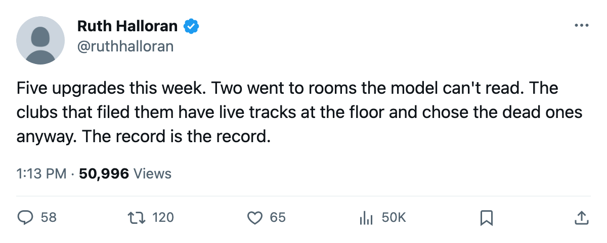
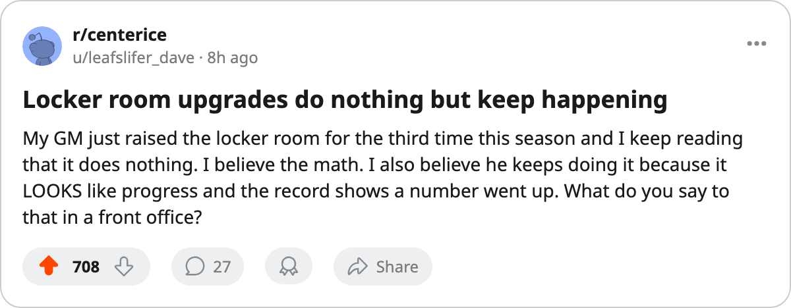

The Upgrade Report: five rooms went up this week, and two of them do nothing
OTT raised a locker room and STL raised a scouting office between April 9 and April 12. Neither track moves a rating in this build.
 Ruth HalloranBusiness of hockey · The Building
Ruth HalloranBusiness of hockey · The Building
Five upgrades were filed between 2005-04-07 and 2005-04-12. Three moved a track that the on-ice model reads. Two moved a track that carries a number in the tuning file and does nothing here. The clubs that made the dead choices did so while their live tracks sat at the floor.
The three that moved something
 Philadelphia Flyers raised practice from level 1 to level 2 between April 9 and April 12. Practice moves every attribute at home. The Flyers' live sum went from -15 to -13, a 2-point swing on the only track in the building that helps them in front of their own crowd. Their practice rink had sat at level 1, carrying a -4 modifier, all season.
Philadelphia Flyers raised practice from level 1 to level 2 between April 9 and April 12. Practice moves every attribute at home. The Flyers' live sum went from -15 to -13, a 2-point swing on the only track in the building that helps them in front of their own crowd. Their practice rink had sat at level 1, carrying a -4 modifier, all season.
 Nashville Predators raised equipment from level 1 to level 2 on the same dates. Equipment moves agility, acceleration, balance and shot accuracy on every surface. Nashville's live sum went from -12 to -11. The Predators are in the playoffs with a 1-1 series against
Nashville Predators raised equipment from level 1 to level 2 on the same dates. Equipment moves agility, acceleration, balance and shot accuracy on every surface. Nashville's live sum went from -12 to -11. The Predators are in the playoffs with a 1-1 series against  Mighty Ducks of Anaheim, and the equipment room is the one track that bites on the road as well as at home.
Mighty Ducks of Anaheim, and the equipment room is the one track that bites on the road as well as at home.
 Toronto Maple Leafs raised workout from level 1 to level 2 between April 7 and April 9. Workout moves strength, checking and endurance. Toronto's live sum went from -6 to -5, the best in the league. They lead NYI two games to none and are looking past this round.
Toronto Maple Leafs raised workout from level 1 to level 2 between April 7 and April 9. Workout moves strength, checking and endurance. Toronto's live sum went from -6 to -5, the best in the league. They lead NYI two games to none and are looking past this round.
The two that did not
 Ottawa Senators raised the locker room from level 0 to level 1. The locker room carries a curve in the tuning file, -10 at level 0 and -8 at level 1, that nothing in this pipeline reads. Ottawa's on-ice facilities term was -2.61 before the upgrade and is -2.61 after. Their practice rink sits at level 1 (-4), their equipment room at level 0 (-6), their travel budget at level 2 (-2).
Ottawa Senators raised the locker room from level 0 to level 1. The locker room carries a curve in the tuning file, -10 at level 0 and -8 at level 1, that nothing in this pipeline reads. Ottawa's on-ice facilities term was -2.61 before the upgrade and is -2.61 after. Their practice rink sits at level 1 (-4), their equipment room at level 0 (-6), their travel budget at level 2 (-2).
 St. Louis Blues raised scouting from level 0 to level 1. Scouting carries a curve that reads -1 at every level up to 4 and 0 above, and nothing in this pipeline reads it either. St. Louis's on-ice facilities term was -2.50 before and is -2.50 after. Their practice rink sits at level 0 (-6), the floor, their equipment room at level 1 (-4), their workout at level 1 (-4), their travel at level 1 (-4).
St. Louis Blues raised scouting from level 0 to level 1. Scouting carries a curve that reads -1 at every level up to 4 and 0 above, and nothing in this pipeline reads it either. St. Louis's on-ice facilities term was -2.50 before and is -2.50 after. Their practice rink sits at level 0 (-6), the floor, their equipment room at level 1 (-4), their workout at level 1 (-4), their travel at level 1 (-4).
| club | track raised | before | after | what it does here | on-ice before | on-ice after |
|---|---|---|---|---|---|---|
| PHI | practice | 1 (-4) | 2 (-2) | all attributes at home | -1.88 | -1.88 |
| NSH | equipment | 1 (-4) | 2 (-3) | agility, accel, balance, shot accuracy | -1.81 | -1.81 |
| TOR | workout | 1 (-4) | 2 (-3) | strength, checking, endurance | 0.00 | 0.00 |
| OTT | locker room | 0 (-10) | 1 (-8) | nothing, read by no process | -2.61 | -2.61 |
| STL | scouting | 0 (-1) | 1 (-1) | nothing, read by no process | -2.50 | -2.50 |
What the front offices are spending
The league files no cost for an upgrade. What an upgrade costs is not on the record, and the money has not moved with these in any consistent direction. What is on the record is what the clubs had available. Ottawa Senators booked $82.74M in revenue against a $42.80M payroll this season, for $32.36M in profit. General manager Michael Hui put resources into a room that the model does not read, while the practice rink stayed at level 1 and the equipment room stayed at zero.
St. Louis Blues booked $75.49M in revenue against a $57.44M payroll, for $11.18M in profit. Colin Skuin's club has less room than Ottawa and filed the same dead-track upgrade. The Blues' live sum is -18, tied for the worst in the league with ANA, CBJ, FLA, MIN and LA.
The pattern
FLA raised scouting in December and then raised the locker room. The record now carries 17 upgrades since 2004-12-04. Six of them went to tracks that nothing in this build reads: 4 locker-room raises (CHI, FLA, OTT, and one earlier) and 2 scouting raises (VAN, FLA, STL), which is 35 percent of the league's building decisions pointed at a curve that produces a zero.
The four tracks that are switched off entirely (coaching, medical, marketing, legal) have never appeared on the upgrade record. No GM has filed one, which makes sense: a club can presumably see that a coaching room does nothing before it spends. The locker room and the scouting room are harder to spot because they carry a number in the file, so they look live when they are not.
Ottawa has 149 days before what the calendar has as next season beginning. If Hui raises the practice rink to level 2, or the equipment room to level 1, the on-ice facilities term will move. If he raises the locker room again, it will not.

